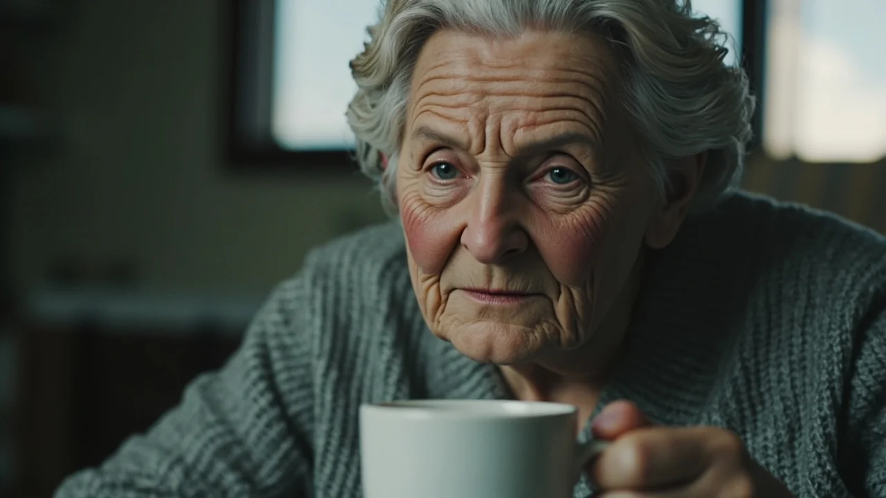
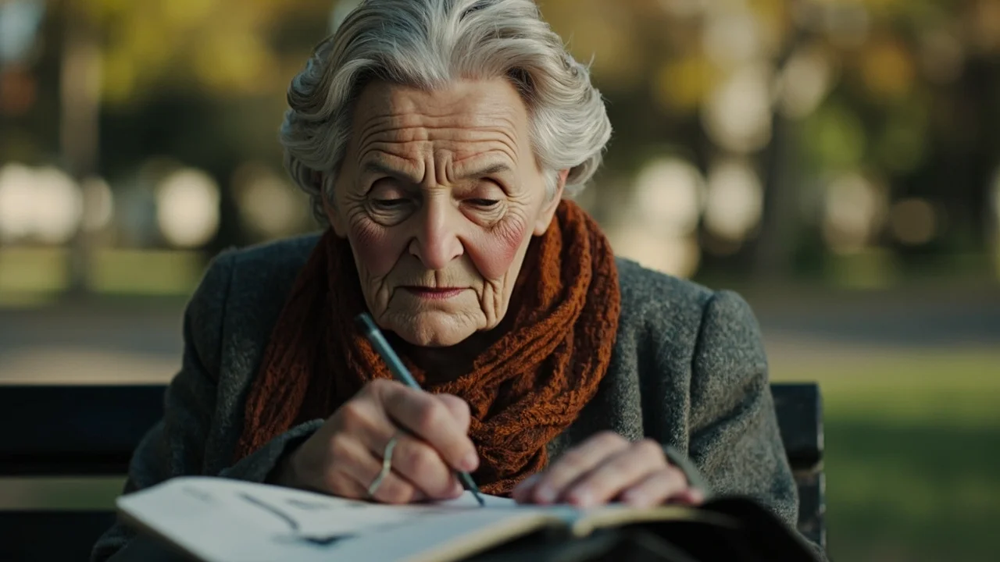
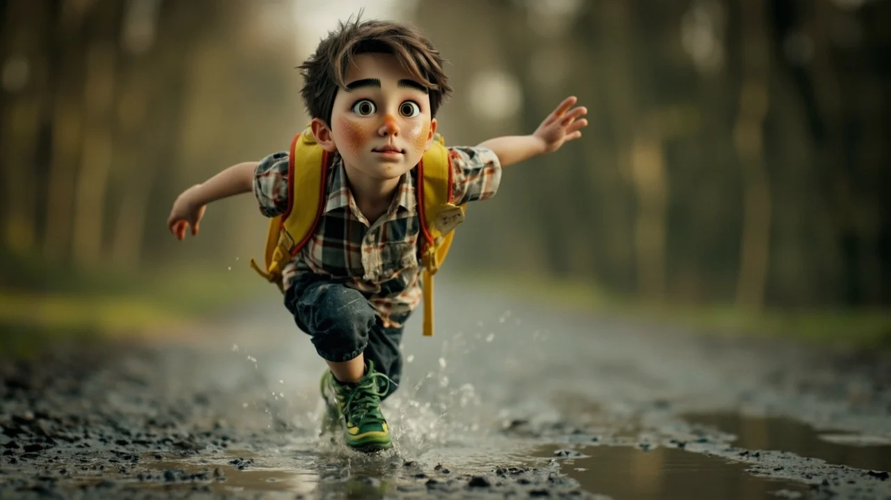
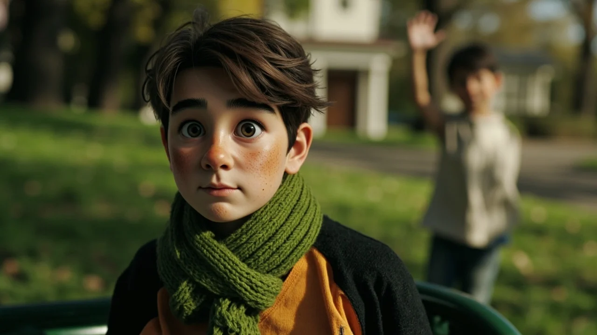
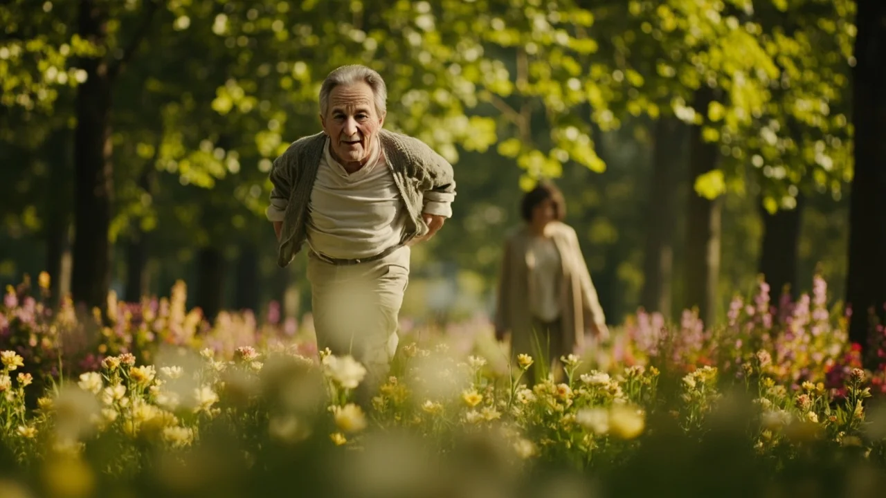

El silbido de la cafetera italiana siempre llegaba antes que la claridad a la cocina. Elisa retiró la cafetera del fogón y sirvió dos tazas de loza blanca sobre la mesa con el movimiento exacto que llevaba repitiendo más de cuarenta inviernos. Miró la segunda taza, intacta y humeante junto a la panera. Llevaba once meses sin guardarla en el aparador; guardarla le parecía una rendición, admitir ante los muebles vacíos que los pasos de Antonio ya no harían crujir la tarima. Bebió su café a sorbos cortos, untó una tostada y guardó en el abrigo el cuaderno de tapas duras y la pluma estilográfica.
A las ocho y cuarto, el aire de la alameda cortaba la respiración con un filo húmedo de noviembre. Las hojas secas formaban una alfombra crujiente sobre la gravilla. Elisa caminaba con las manos en los bolsillos del abrigo de espiga y la bufanda de lana color teja ceñida al cuello. Su destino era el banco de madera verde al abrigo de un viejo castaño de indias. Aquel era su banco. Allí se habían sentado de novios a compartir cucuruchos de castañas, y allí volvía ella cada mañana, puntual como un reloj de cuerda.
Se sentó en el extremo que recibía el primer rayo de sol. Apoyó el cuaderno sobre el regazo, desenroscó la pluma con los mitones puestos y miró las aguas quietas del estanque.
—Hoy se ha levantado viento del norte, Antonio —susurró, dejando que la tinta impregnara el papel—. He recogido los geranios del balcón porque la helada casi quema los brotes tiernos. Tu hermano llamó el martes; dice que el lumbago lo tiene doblado, pero sigue empeñado en podar las parras él solo. Ya sabes cómo es. Yo sigo poniéndole una pizca de canela al café, como a ti te gustaba, aunque me siga pareciendo que sabe a fiesta de pueblo.
Escribió una página entera relatando la avería del grifo y la quietud de las tardes al cerrarse las ventanas. Al terminar, sopló sobre la tinta, arrancó la cuartilla y la dobló en cuatro partes. Deslizó los dedos bajo el respaldo de madera, en la rendija donde el hierro se unía al listón de pino, y encajó el papel bien adentro, protegido del rocío y de los barrenderos.
La sorpresa llegó tres días después, en una mañana fría en que la niebla borraba los setos. Al meter la mano en la hendidura para retirar su última carta, sus yemas no tocaron el papel de hilo habitual, sino una superficie más gruesa, doblada con torpeza.
Sacó una hoja de cuaderno escolar de cuadrícula grande. Al desdoblarla sobre sus rodillas, el corazón le dio un vuelco breve. Era un dibujo con ceras de colores: una casa blanca con tejado rojo muy empinado, una chimenea con humo azul y un mar de olas surcado por dos gaviotas torpes. En la parte inferior, con trazo infantil a lápiz y letras grandes de imprenta, alguien había escrito: «Espero que hoy tengas un día bonito».
Elisa levantó la vista, recorriendo el sendero desierto. Solo pasaba un barrendero con su carro metálico. Nadie la observaba. Volvió a mirar el dibujo; la cera azul se había corrido por la humedad, pero el tejado rojo brillaba con una tozudez infantil que desentonaba con la penumbra del parque.
Se quitó el mitón derecho para tocar el trazo del lápiz. Durante casi un año, el banco había sido un buzón hacia el silencio. De pronto, la madera devolvía una respuesta imprevista. Sonrió por primera vez en muchos meses, guardó el dibujo en el bolsillo interior, junto a su pecho, y abrió su libreta.

Aquella mañana no escribió sobre los geranios. Dejó fluir la pluma con una ternura inesperada:
«Gracias por tu dibujo de la casa junto al mar. La chimenea me ha recordado a la casa de mis abuelos en el pueblo, donde pasábamos las Navidades arrimados a la lumbre. Hoy el parque está muy frío y la niebla no deja ver los patos, pero tu tejado rojo le ha quitado tristeza a la mañana. Si vuelves a pasar por aquí, fíjate en el castaño grande: en primavera da unas flores blancas preciosas que parecen velas encendidas».
Dobló la cuartilla y la introdujo en la rendija, empujándola hasta que quedó oculta bajo la madera.
Durante las tres semanas siguientes, la rendija del banco se convirtió en el eje secreto de las mañanas de Elisa. A través de las hojas de cuadrícula supo que su corresponsal se llamaba Nico, que tenía diez años y que acababa de mudarse a una casa cercana que todavía olía a pintura fresca. Nico escribía con frases breves, salpicadas de borrones y confesiones luminosas:
«Mi madre decía que los barcos de vela nunca se pierden si miran la estrella polar. Los domingos ponía una cinta de música francesa y hacía crepes en la sartén vieja. Cantaba muy alto y casi siempre se le quemaba el primero, pero nos reíamos mucho. Ahora mi padre compra galletas en el supermercado porque dice que la cocina se ensucia demasiado».
Elisa le respondía con caligrafía pausada:
«A Antonio tampoco se le daba bien cocinar, Nico. Cuando intentaba freír patatas parecía que estábamos en medio de una batalla, con la tapa de la sartén como escudo. Pero sabía arreglar cualquier juguete con un trozo de alambre y pegamento. Siempre me decía que la paciencia es como un abrigo de lana: pica un poco al principio, pero al final es lo único que te quita el frío».
Nico le dejaba hojas secas de arce y envoltorios de caramelos de anís; Elisa le contaba historias de los puentes y cómo distinguir un mirlo macho por el pico amarillo. Ninguno nombraba la muerte, pero ambos hablaban del mismo eco: el hueco que queda en el pasillo cuando se apagan las luces.
Una mañana de principios de diciembre, una llovizna menuda empañaba los faroles. Elisa llegó al parque antes de tiempo y vio a un niño con anorak azul marino y capucha gris, de puntillas para encajar un papel en la ranura.

Elisa se detuvo. El niño giró la cabeza. Tenía la cara pecosa y ojos grandes de color miel. Al ver la pluma en el abrigo de Elisa y su bufanda color teja, tragó saliva y apretó su mochila amarilla contra el pecho.
—¿Eres tú la del abrigo gris? —preguntó con un hilo de voz.
—Y tú debes de ser el arquitecto de la casa con tejado rojo —respondió Elisa con voz suave—. Me gustó mucho la chimenea, Nico. Hacía tiempo que nadie me mandaba un dibujo tan hermoso.
Una sonrisa tímida le templó las mejillas al muchacho.
—Tengo que irme al colegio —dijo, mirando hacia la verja—. Por el parque hay menos coches y me gusta ver los patos.
—El camino del parque siempre es mejor —asintió Elisa—. Corre, que te vas a calar. Mañana habrá carta nueva.
Nico asintió con energía y salió disparado por la gravilla, salpicando agua con sus zapatillas verdes hasta perderse tras los castaños.
A mediados de diciembre el invierno cayó de golpe sobre la ciudad. Un lunes, Elisa dejó en la rendija del banco una carta breve y dos chocolatinas en papel de plata. Al día siguiente seguían allí. Cuando el jueves el envoltorio continuó intacto sobre la madera escarchada, una inquietud densa se le cerró en la garganta.
Recordó una de las notas del niño: «Vivimos en el tercero B del edificio de ladrillo rojo, el de los balcones verdes frente a la panadería». Esa misma tarde horneó un bizcocho de limón, lo envolvió en un paño dentro de una fiambrera y caminó las cuatro manzanas hasta el portal.

Subió los tres tramos de escalera y apretó el timbre del tercero B. La puerta se abrió apenas un palmo. Al otro lado apareció un hombre de unos cuarenta años, despeinado, con barba de varios días y jersey azul marino con coderas. Tenía los ojos hundidos por el insomnio.
—Buenas tardes. ¿Es usted el padre de Nico? —dijo Elisa—. Me llamo Elisa. Soy la vecina que recoge las cartas del banco del parque. Al ver que no pasaba a buscar las chocolatinas temí que hubiera ocurrido algo malo.
El hombre parpadeó hasta que una chispa de comprensión le cruzó los ojos.
—Usted… es la de las historias de los mirlos —murmuró—. Soy Daniel. Pase, por favor. Nico lleva cuatro días en la cama con bronquitis y mucha fiebre. No ha parado de decir que sus cartas se iban a congelar.
El piso arrastraba el aire desamparado de los hogares en pausa: cajas sin abrir, platos acumulados y un árbol artificial en su embalaje en una esquina. Nico descansaba en su habitación; al ver entrar a Elisa sus ojos brillaron de alegría.
—¡Elisa! —dijo con voz tomada—. Te dije que las chocolatinas se iban a poner duras.
—Estaban como piedras, muchacho —bromeó ella, sentándose junto a la cama—. Pero te he traído bizcocho caliente.
Tras arropar al niño y dejarlo dormido por el jarabe, Daniel acompañó a Elisa a la cocina. El hombre puso agua a calentar y de pronto se apoyó contra la encimera, tapándose la cara con las manos en un llanto mudo y exhausto.
Elisa apartó una taza limpia, puso una bolsita de manzanilla dentro y le colocó una mano firme sobre el brazo.
—No sé cómo hacerlo, Elisa —confesó Daniel con la voz rota—. Intento que el niño no lo note, pero llego por la noche y siento que la casa se me cae encima. Me da miedo no ser suficiente para él.

—Nadie sabe cómo se hace esto solo, Daniel —le dijo ella con dulzura—. Cuando Antonio murió, tardé cuatro meses en atreverme a cambiar las sábanas de la cama, creyendo que si lavaba su olor lo borraba del todo. Pero el amor no se borra; solo ocurre que duele tanto que uno prefiere quedarse a oscuras para no tropezar con el vacío.
Daniel respiró hondo y se secó las mejillas con la manga.
—Nico sonríe más desde que empezó a dejar notas en el banco —dijo con gratitud.
—Nos devolvió la voz a los dos —respondió ella—. Ahora bébete la infusión y descansa, que mañana volveré a ver cómo sigue el enfermo.
La víspera de Nochebuena amaneció con un cielo limpio de invierno. Durante los días previos, Elisa había subido al tercero B cada tarde con caldos y guisos caseros, mientras el piso recuperaba el orden y el aroma a canela.
Aquella mañana, Nico y Daniel la esperaban en el banco del parque. Al verla llegar, el niño saltó sobre la gravilla agitando un sobre blanco con la bufanda verde que Elisa le había tejido. No era una carta para la madera: era una invitación formal para cenar con ellos la Nochebuena.
Elisa vaciló, sintiendo el peso de cuarenta y dos años de navidades compartidas únicamente con Antonio.
—Es una noche para vosotros, Daniel —dijo ella con un temblor discreto en la voz—. Yo estoy acostumbrada a mi mesa.
—Elisa, usted ya forma parte de esta mesa —respondió Daniel tomándole la mano—. Y Nico dice que si usted no viene, él no prueba el pescado al horno.

Elisa miró la ilusión en los ojos del niño y asintió:
—Vendré, pero con una condición: yo llevo la tarta de manzana de Antonio. Y no quiero ver ni una miga en los platos.
Aquella cena tuvo la calidez luminosa de las cosas verdaderas. En el salón brillaban las luces del árbol, adornado con piñas del parque. Cenaron entre risas y anécdotas antiguas. Al llegar los postres, Nico colocó sobre la mesa una lámina grande de cartulina blanca.
Era su dibujo más hermoso: una mesa servida alrededor de la cual estaban Nico con su anorak, Daniel con su jersey, Elisa con su bufanda teja y una cuarta figura de pelo blanco y sonrisa ancha sentada junto a ella con una taza en la mano. En el cielo de la ventana, dos estrellas gemelas —una dorada y otra plateada— brillaban sobre el tejado.
—Esta es mamá —explicó el niño señalando la estrella plateada—. Y este es Antonio, que me dijiste que le gustaba sentarse a la derecha para ver la luz. Así cenamos todos juntos.
Elisa acarició la cartulina con las yemas trémulas. Una lágrima tibia le rodó por la mejilla, pero era una lágrima de paz honda. Apretó la mano menuda de Nico y cruzó una mirada cómplice con Daniel, comprendiendo que recordar no era anclarse en la ausencia, sino ensanchar la vida para dar cobijo a los que todavía caminan a nuestro lado.
La primavera regresó a la alameda con un estallido de brotes tiernos. Los plátanos se cubrieron de hojas anchas que mecían sombras frescas sobre la gravilla, y el castaño de indias encendió sus flores blancas al sol de mayo.
En el banco verde del parque, la rendija de hierro forjado seguía allí, pero ya no escondía papeles doblados en cuatro partes.
Ahora, cada tarde al salir del colegio, tres figuras compartían el asiento de madera. Elisa ayudaba a Nico con las tareas mientras el niño merendaba pan con chocolate, y Daniel leía el periódico sosteniendo un termo de café que Elisa le había enseñado a preparar con una brizna de canela.
Al sonar las campanas de las seis, Nico guardaba los lápices en su mochila amarilla y corría hacia el tronco rugoso del castaño. Allí, en un hueco natural protegido de la lluvia, los tres custodiaban una pequeña caja metálica. Una vez al mes depositaban en ella una cuartilla escrita entre todos: noticias sencillas sobre el rosal del balcón, los progresos de Nico con la flauta y los planes para pasar unos días de verano frente al mar que el niño había dibujado meses atrás.
Elisa se apoyaba en el brazo de Daniel para emprender el camino de regreso, escuchando la risa limpia de Nico que se adelantaba saltando entre los parterres. Respiraba el aire tibio de la tarde con serenidad recobrada, sabiendo que el amor no se extingue cuando una voz se apaga, sino que renace, paciente y generoso, en cada mano que decide no soltarse.